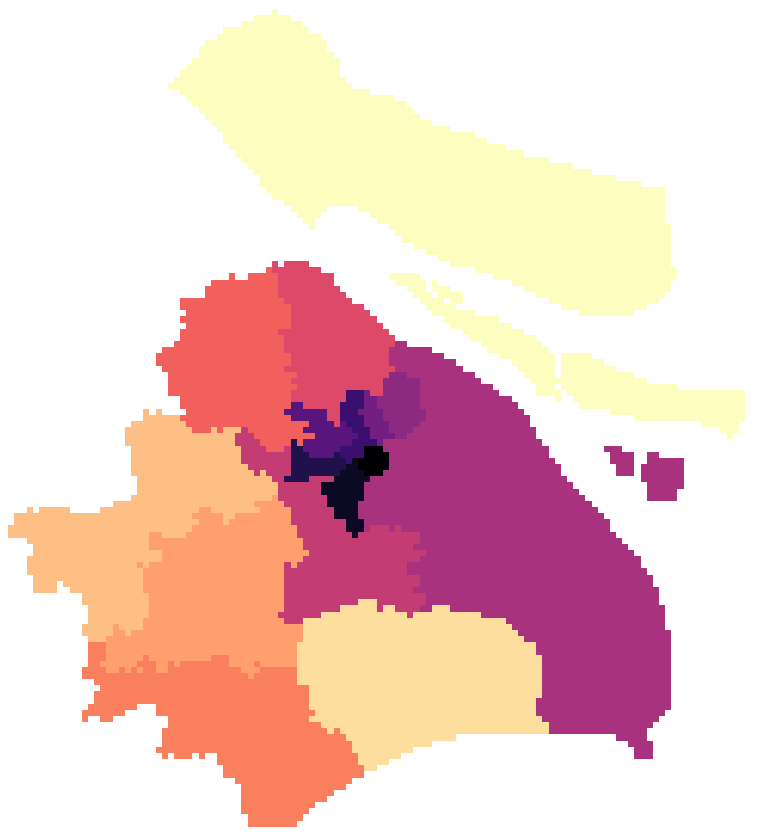
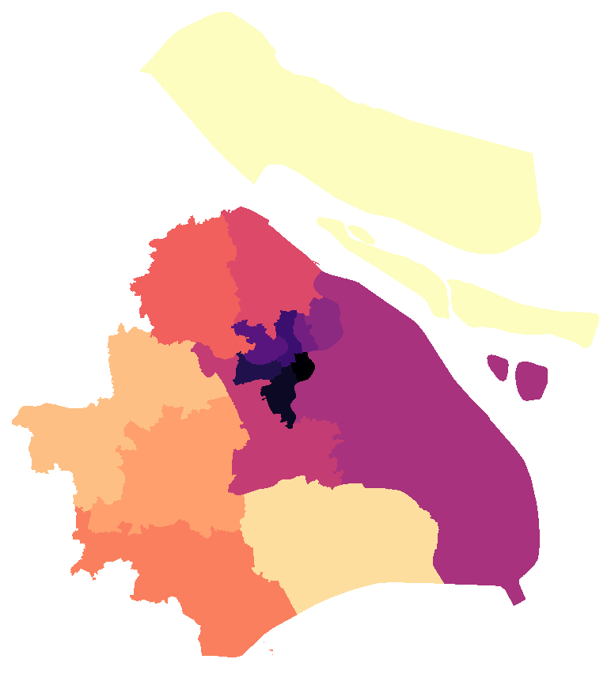
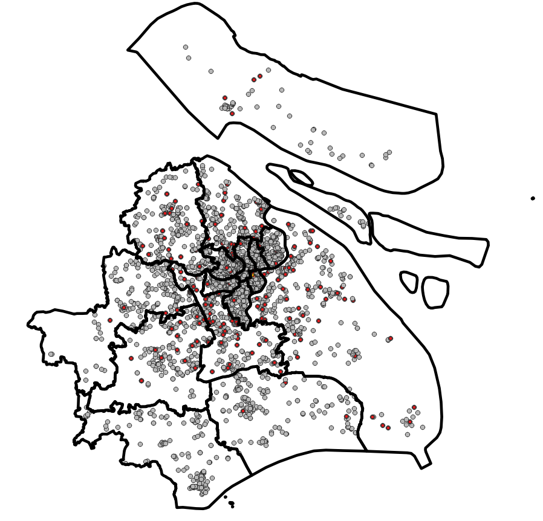
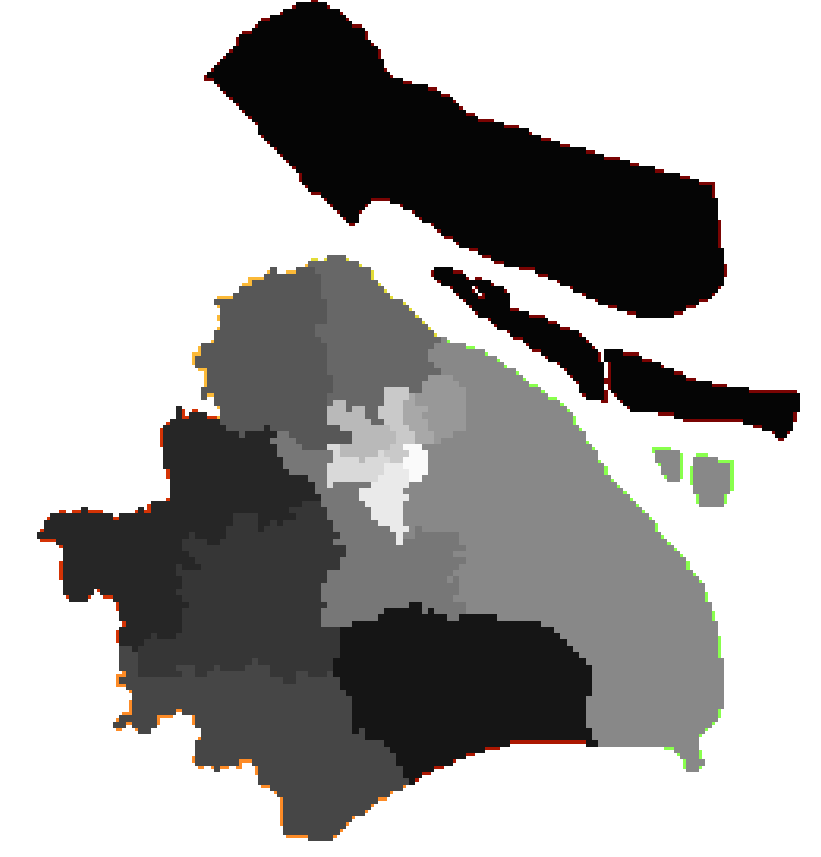
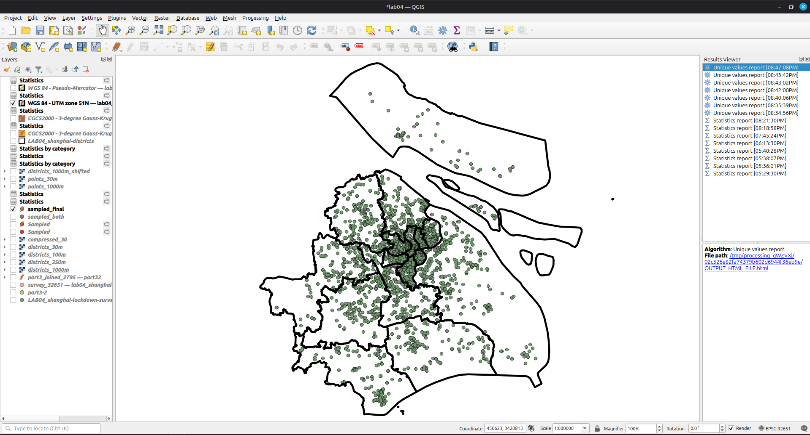

Lab 4 · October 2026
The same layer, four cell sizes: what a data model costs to store, to ask, and to claim
The question
How much of Shanghai is each of its sixteen districts, when the same polygon layer is measured in four coordinate frames and then rasterized to four cell sizes. What does each choice cost in bytes, in seconds, and in measurement error?
The data
Two files from Brightspace, plus one derived join and four rasters built from them in QGIS 3.44.15 LTR.
- Survey —
LAB04_shanghai-lockdown-survey.csv. 3,348 rows, 31 columns, one respondent per row. Coordinates for 2,795 of them; 553 rows carry(空)in GPS info, which is Chinese for empty, and a placeholder is not a coordinate. The file is GB18030-encoded; nothing in the CSV says so. - Districts —
LAB04_shanghai-districts.geojson. Sixteen polygons from DataV.GeoAtlas. Thesurvey_codefield is not in the source; it was derived for this lab by joining the points to the polygons. The published land area of Shanghai is 6,340.5 km²; these polygons measure 7,988.5 km², 26% more, because they include water and the Chongming islands the yearbook figure does not.
The method
- Encoding. Loaded the CSV with default UTF-8, saw replacement characters in the Chinese columns, re-loaded with GB18030. The encoding was recovered from the failure.
- Frames. Reprojected the districts to EPSG:3857, 32651, 4549 and 4547. Measured
area($geometry)on each and summed the sixteen features with Basic statistics for fields. - Join. Reprojected the survey points to EPSG:32651, joined them to the districts with Join attributes by location (predicate: within, one-to-one), created a
mismatchfield comparing the survey's ownDistrictcode to the polygon'ssurvey_code. - Rasters. Rasterized the districts at 1 km, 250 m, 100 m and 30 m onto the fixed extent
295000, 430000, 3393000, 3528000 [EPSG:32651]withsurvey_codeas the burn field, NoData 0, output type Byte. Then repeated at 1 km with the grid shifted half a cell (extent294500, 430500, 3392500, 3528500). - Query loop. Sampled the 30 m and 100 m rasters at each joined point and counted disagreements with the vector join.
- Point rasters. Rasterized the survey points at 1 km and 30 m with a fixed burn value of 1, and counted lit cells.
The map
Figure 1: Districts at 1 km and 30 m, matched zoom


Figure 2: The 30 m staircase
Figure 3: The 245 inconsistent points, city scale

Figure 4: The 1 km grid shifted half a cell

Figure 5: The QGIS project

lab04.qgz with the four district rasters, the joined points layer and the reprojected districts loaded.What I found
Areas measured planar in EPSG:32651 (WGS 84 / UTM 51N), which departs
from the ellipsoidal area by under 0.03 per cent at this latitude.
Gridded areas were computed by cell count on a 30 m grid with origin
295000, 3528000; shifting that origin by half a cell moves a small
district by several per cent, so gridded figures are reported to no
better than the nearest per cent.1. The frames table
Same sixteen polygons, measured planimetrically in each CRS.
| Frame | Total area, km² | Difference from geodetic |
|---|---|---|
| Geodetic, WGS 84 ellipsoid | 7,988.523 | — |
| EPSG:3857 Web Mercator | 10,955.302 | +37.14% |
| EPSG:32651 UTM 51N | 7,986.346 | −0.027% |
| EPSG:4549 CGCS2000 GK CM 120E | 7,992.613 | +0.051% |
| EPSG:4547 CGCS2000 GK CM 114E | 8,089.649 | +1.27% |
Why the file disagrees with the yearbook. The measured area is 26% larger than the published Shanghai land area because it includes territorial water and Chongming Island, which the yearbook counts separately.
2. Storage
| Cell size | Columns × rows | Cells | File size | Time to burn |
|---|---|---|---|---|
| 1,000 m | 135 × 135 | 18,225 | 18.6 kB | 0.11 s |
| 250 m | 540 × 540 | 291,600 | 292.2 kB | 0.10 s |
| 100 m | 1,350 × 1,350 | 1,822,500 | 1.8 MB | 0.09 s |
| 30 m | 4,500 × 4,500 | 20,250,000 | 20.3 MB | 0.17 s |
File sizes scale with cell count: 20.3 MB at 30 m vs 18.6 kB at 1,000 m. Compression reduces the 30 m raster to 270.7 kB, but the vector layer is only 61 kB and contains more information.
3. The query loop
Which district is this point in?
| Route | What it has to do | Time | Agrees with vector join |
|---|---|---|---|
| Vector join, no index | 2,795 points against 16 polygons totalling 3,443 vertices | 0.13 s | 2,550 |
| 30 m raster | Two divisions and one array read per point | 0.16 s | 2,794 |
| 100 m raster | Two divisions and one array read per point | 0.13 s | 2,789 |
Raster queries are faster (constant-time) but less accurate near boundaries. The 30 m raster matches 2,794 of 2,795 points; 100 m matches 2,789. Vector queries are slower but more precise.
4. What the grid costs to store
The same sixteen polygons as points, rasterized with a fixed burn value of 1:
| Cell size | Cells in the grid | Cells with a respondent in them | Share |
|---|---|---|---|
| 1,000 m | 18,225 | 1,249 | 6.9% |
| 30 m | 20,250,000 | 2,568 | 0.013% |
At 30 m, only 2,568 of 20,250,000 cells contain data — extreme inefficiency for sparse points. The grid cannot distinguish empty areas from unsurveyed areas.
5. Per-district error
Each district's area, in km², measured from the vector layer in EPSG:32651 and from cell counts on each raster. Percentages are signed differences from the vector figure.
| District | Vector, km² | 1 km | 250 m | 100 m | 30 m |
|---|---|---|---|---|---|
| Huangpu | 20.36 | −1.77% | −0.54% | −0.29% | −0.014% |
| Hongkou | 23.41 | +2.52% | −0.15% | +0.30% | −0.039% |
| Jing'an | 36.75 | +3.40% | −0.68% | +0.03% | +0.009% |
| Changning | 37.27 | −0.72% | +0.79% | +0.05% | +0.012% |
| Xuhui | 55.09 | −3.79% | +0.06% | +0.02% | +0.005% |
| Putuo | 55.54 | −4.57% | +0.04% | −0.11% | +0.003% |
| Yangpu | 60.46 | −0.76% | −0.86% | +0.12% | +0.026% |
| Minhang | 372.56 | +1.19% | −0.10% | −0.01% | −0.008% |
| Pudong New Area | 1,696.68 | −0.22% | +0.04% | +0.01% | +0.002% |
| Chongming | 2,101.73 | −0.13% | −0.06% | +0.01% | −0.017% |
| All sixteen | 7,986.35 | −0.09% | +0.02% | +0.01% | +0.000% |
Total area errors cancel across districts, but individual district errors can be large. Small districts with complex boundaries suffer most: Putuo is 4.6% off at 1 km resolution. Error scales with (perimeter × cell size) / area.
6. What each resolution could not record
| Cell size | Area of one cell | Something that size |
|---|---|---|
| 1,000 m | 1.00 km² | Century Park (1.4 km²) |
| 250 m | 6.25 ha | A city block, or a small residential compound |
| 100 m | 1.00 ha | A single large compound or a small block of flats |
| 30 m | 0.09 ha | A single building footprint or a courtyard |
At 250 m resolution, Shanghai residential compounds (1–5 ha) become invisible, which is important for lockdown administration analysis.
7. The same 1 km grid, half a cell to the left
Same polygons, same cell size, same software, same burn field. The only change is the grid origin: shifted 500 m west and 500 m north.
| District | Vector, km² | Grid A | Grid B | Swing |
|---|---|---|---|---|
| Huangpu | 20.36 | −1.77% | −6.68% | 4.9 pts |
| Hongkou | 23.41 | +2.52% | −1.75% | 4.3 pts |
| Jing'an | 36.75 | +3.40% | +6.12% | 2.7 pts |
| Changning | 37.27 | −0.72% | +4.64% | 5.4 pts |
| Xuhui | 55.09 | −3.79% | +5.28% | 9.1 pts |
| Putuo | 55.54 | −4.57% | +2.63% | 7.2 pts |
| Yangpu | 60.46 | −0.76% | +2.55% | 3.3 pts |
| Baoshan | 316.15 | −1.00% | −0.68% | 0.3 pts |
Grid origin shifts cause arbitrary errors: Xuhui measures -3.8% or +5.3% depending on origin.
8. What the vector layer was hiding
The vector layer itself has ~600 m resolution (mean vertex spacing), despite 11 cm coordinate precision. High-resolution rasters waste storage on false precision.
What this does not show
- The 553 missing respondents. They are simply not on the map. Every rate computed from the 2,795-point layer is a rate over 83.5% of the survey, and nobody checking the layer for nulls would notice.
- Area under a sloped or rough surface. Planimetric area is the horizontal shadow. If the ground is not flat, the surface area is larger.
Reflection and AI-usage disclosure
The written reflection and the AI-usage disclosure are submitted through Brightspace.
← Back to all labs